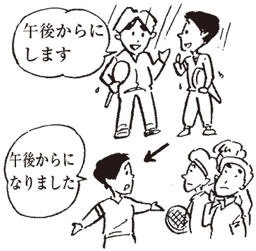

to; for the purpose of
❶ あした、デパートへくつを買いに行きます。
❷ 昼休みには、寮へ食事にもどります。
❸ ひろし君は何をしに来たの。何もしないで帰ったけど。
❹ 空港へ友だちを送りに行きます。
| 接続 | Vます／する動詞のN＋に |
|---|
１）「～に…」の形で、「～」に「移動の目的」、「…」に「行く・来る・帰る・もどる」などの移動動詞を用いて、移動の目的を言う場合に使う。
２）目的の行為が、移動した先で完結する場合にだけ使う。
◆ × ハワイに結婚に行きます。
３）目的が日常のことではなく、重要な場合には「に」は使わずに「ために」を使う。
◆ △国際会議に出席しにパリへ行きます。
→○国際会議に出席するためにパリへ行きます。
１）Aim of movement precedes pattern and is followed by verbs of movement such as 行く, 来る, 帰る, or 戻る.
２）Only used when action aimed for is accomplished at site moved to.
◆ × ハワイに結婚に行きます。
３）In serious cases rather than every day objectives, ために is used instead of に.
◆ △国際会議に出席しにパリへ行きます。
→○国際会議に出席するためにパリへ行きます。
➡ のに
～をするときに
on the occasion of
❶ 新学期にあたって、皆さんに言っておきたいことがあります。
❷ 新居を購入するにあたって、わたしども夫婦はいろいろな調査をしました。
❸ 研究発表をするにあたって、しっかり準備をすることが必要だ。
❹ この計画を実行するにあたり、ぜひ周囲の人の協力を求めなければならない。
| 接続 | Ｖる／Ｎ＋にあたって | F |
|---|
ある決心を要する特別なとき、重要な行動を前にして、それに対しての積極的な姿勢を言いたいときに使う。改まった言い方だから日常的な普通のことには使わない。
Proactive posture toward some important event that requires resolve.Formal expression not usually used in everyday speech.
～に／～で
in, at
❶ 今、Ａ国は経済成長期にあって、人々の表情も生き生きとしている。
❷ 数学は高度情報社会にあって、必要な学問的教養となっている。
❸ この非常時にあって、あなたはどうしてそんなに平気でいられるのですか。
| 接続 | Ｎ＋にあって | W |
|---|
１）「～のような特別な事態・状況に身をおいているので、または身をおいているのに」と言いたいときに使う。
２） ❶ ❷ のように、「こんな大変な状況にいるので」と後の文と順接的につながることもあるし、 ❸ のように「こんな大変な状況にいるのに」と逆接的につながることもある。
１）Since someone is in some special state or condition, or even though someone is in certain situation, react contrary to expectations.
２）In sentences ❶ and ❷ , clause following shows regular progression (since we're in such dire straits). Sometimes used as in sentence ❸ , showing paradox (even though we are in such dire straits).
～という重大な事態になって
being in such straits
❶ 39度もの熱が３日も続くという事態に至って、彼はやっと医者へ行く気になった。
❷ 関係者は子どもが自殺するに至って初めて事の重大さを知った。
❸ 学校へほとんど行かずにアルバイトばかりしていた彼は、いよいよ留年という状況に至って、親に本当のことを言わざるを得なかった。
| 接続 | Vる／N＋に至って | F | W |
|---|
「～に至って」の形で、「～という重大な事態になって」という意味を表す。後の文に「やっと・ようやく・はじめて」などの言葉をよくいっしょに使う。
Something becomes a serious situation. Words such as やっと、ようやく、and はじめて are often used with this pattern.
～の場合は極端で
in extreme cases; in worst-case scenarios
❶ わたしの家族はだれもまともに家で夕食をしない。姉に至っては仕事や友人との外食で家で食べるのは月に１回か２回だ。
❷ どこの駅でも周辺の放置自転車の数が増えているらしいが、わたしが住む町に至っては、道路が狭いため、いつ子どもを巻き込む事故が起こってもおかしくない状態だ。
| 接続 | N＋に至っては | W |
|---|
「～に至っては」の形で、マイナス評価の例がいくつかある中で～という極端な例を挙げて、その場合はどうであるかを説明する。
Describes situation in most extreme case of several examples of negative evaluations.
～までになる
reached
❶ 被害は次第に広範囲に広がり、ついに死者30人を出すに至った。
❷ 小さなバイクを造ることから始めた本田氏の事業は発展し続け、とうとう世界的な自動車メーカーにまで成長するに至った。
❸ 工場閉鎖に至ったその責任は、だれにあるのか。
| 接続 | Vる／N＋に至る | F | W |
|---|
１）「いろいろなことが続いた後、ついにこうなった」と言いたいときに使う。
２）後の文では「ついに・とうとう」などの言葉をよくいっしょに使う。
１）After several events occur in succession, something finally happens.
２）Often ついに, or とうとうfollows.
～までも
even
❶ 警察の調べは厳しかった。現在の給料から過去の借金の額に至るまで調べられた。
❷ 中山氏は山田さんに関心があるのだろうか。山田さんの休日の行動に至るまで詳しく知りたがった。
❸ 身近なごみ問題から国際経済の問題に至るまで、面接試験の質問内容は実にいろいろだった。
| 接続 | Ｎ＋に至るまで | W |
|---|
「ものごとの範囲がそんなことにまで達した」と言いたいときに使う。上限を強調して表すのであるから、極端な意味の名詞に接続する。
Things come to such a pass. Emphasis on upper limits. Follows nouns signifying extremes.
～で／～に
in; at
❶ 入学式はＡ会館において行われる予定。
❷ この植物は、ある一定の環境においてしか花を咲かせない。
❸ 経済界における彼の地位は高くはないが、彼の主張は注目されている。
❹ このレポートでは江戸時代における庶民と武士の暮らし方の比較をしてみた。
❺ 最近、人々の価値観においても、ある小さな変化が見られた。
❻ マスコミはある意味において、人を傷つける武器にもなる。
| 接続 | Ｎ＋において | W |
|---|
１）ものごとが行われる場所、場面、状況を表す。 ❸ ❺ のように、方面・分野に関しても使われる。
２）「～で」と大体同じ意味だが、改まった書き言葉だから、日常的な文の中ではあまり使わない。
◆ × わたしは毎日図書館において勉強します。
３）後に名詞が来るときは ❸ ❹ のように「におけるN」という形になる。
１）Describes places, scenes, or conditions where something happens. Used as in sentences ❸ and ❺ for fields or areas.
２）Nearly same meaning as で, but being formal written form, is not often used in everyday language.
◆ × わたしは毎日図書館において勉強します。
３）When followed by a noun, becomes における N, as in sen-tences ❸ and ❹ .
➡ におうじて
～に対応して
for, according to
❶ 人は年齢に応じて社会性を身につけていくものだ。
❷ アルバイト料は労働時間に応じて計算される。
❸ 当店ではお客さまのご予算に応じてお料理をご用意いたします。
❹ 登山をするには、当日の天候に応じた服装をしてくること。
| 接続 | Ｎ＋に応じて |
|---|
１）主として程度や種類の違いを表す語につき、それが変われば、それに対応して後の事柄も変わるということを表す。
２）後に名詞が来るときは ❹ のように「に応じたN」という形になる。
１）Appends mainly to words expressing difference in level or category. Shows that if N changes, what follows will change accordingly.
２）When followed by a noun, becomes に応じた N, as in sentence ❹ .
➡ において
～に関係なく
doesn't matter whether, regardless if
❶ このデパートは、曜日にかかわらず、いつも込んでいる。
❷ 金額の多少にかかわらず、寄付は大歓迎です。
❸ 値段の高い安いにかかわらず、いい物は売れるという傾向があります。
| 接続 | N＋にかかわらず ２）参照 |
|---|
１）「前に来る事柄がどうであっても、またどちらであっても、後のことが成立する」という意味。
２） ❷ ❸ のように、対立関係にある言葉を受けることが多い。
３）「にかかわりなく・をとわず」と意味・用法が大体同じ。
１）Whatever follows after pattern will occur no matter what happens before pattern.
２）Often used in contrasting relationships, as in sentences ❷ and ❸ .
３）Same meaning and usage as にかかわりなく and をとわず.
～に関係なく
regardless of
❶ 田中さんは相手の都合にかかわりなく仕事を頼んでくるので本当に困る。
❷ このグループのいいところは、社会的な地位にはかかわりなく、だれでも言いたいことが言えることだ。
❸ 当社は学校の成績のいい悪いにかかわりなく、やる気のある人材を求めています。
❹ 今回の研修旅行に参加するしないにかかわりなく、このアンケートに答えてください。
| 接続 | N＋にかかわりなく ２）参照 |
|---|
１）「前に来る事柄がどうであっても、またどちらであっても、後のことが成立する」という意味。
２） ❸ ❹ のように、対立関係にある言葉を受けることが多い。
３）「にかかわらず・をとわず」と意味・用法が大体同じ。
１）Whatever follows after pattern will occur no matter what happens before pattern.
２）Often used in contrasting relationships, as in sentences ❸ and ❹ .
３）Same meaning and usage as にかかわらず, and をとわず.
～のような重大なことに関係する
concerned with; have bearing on
❶ 人の名誉にかかわるようなことを言うな。
❷ プライバシーを守るということは人権にかかわる大切な問題です。
❸ 教育こそは国の将来にかかわる重要なことではないでしょうか。
| 接続 | Ｎ＋にかかわる |
|---|
「～にかかわるN」の形でただ～に関係があるのではなく、「それに重大な影響を与える」と言いたいときの表現。
In form ～にかかわる N, something is not only related, but has great impact on but has great impact on what comes before pattern.
～の場合だけは
only in the case of; only at times when
❶ 自信があると言う人に限って、試験はあまりよくできていないようだ。
❷ ハイキングに行こうという日に限って雨が降る。わたしはいつも運が悪いなあ。
❸ あの先生に限ってそんなしかり方はしないと思う。
❹ Ｓ社の製品に限ってすぐに壊れるなんてことはないだろうと思っていたのに……。
| 接続 | Ｎ＋に限って |
|---|
「～のときだけ、～だけは特に」と言いたいときに使う。 ❶ ❷ のように「特別にその場合だけ好ましくない状況になって不満だ」と言いたいとき、また ❸ ❹ のように、信頼や特別な期待をもって話題にし、「～だけは好ましくないことはないはずだ」という判断を言うときに使う。
Emphasizes something happens only in certain occasions or in particular cases. As in sentences ❶ and ❷ , can be used to show unhappiness with unpleasant circumstances that arise only in certain instances.Also as in sentences ❸ and ❹ , to show trust or judgment that something unpleasant cannot possibly happen in this one particular instance.
～だけでなく
not limited to
❶ 日曜日に限らず、休みの日はいつでも、家族と運動をしに出かけます。
❷ 男性に限らず女性も、新しい職業分野の可能性を広げようとしている。
❸ この家に限らず、この辺りの家はみんな庭の手入れがいい。
| 接続 | N＋に限らず |
|---|
「～だけでなく、～が属するグループの中の全部に当てはまる」と言いたいときに使う。
Means "not only N," or or something pertains to everything in a certain group.
～だけは
only for
❶ この券をご持参のお客さまに限り、200円割り引きいたします。
❷ 電話取り次ぎは８時まで。ただし、急用の場合に限り、11時まで受け付ける。
❸ 朝９時までにご来店の方に限り、コーヒーのサービスがあります。
| 接続 | Ｎ＋に限り |
|---|
「～だけ特別に…する」と言いたいときに使う。
Something special will be done for only a certain category.
～が一番いい
just the thing; the best
❶ １日の仕事を終えたあとは、冷えたビールに限りますよ。
❷ 自分が悪いと思ったら、素直に謝ってしまうに限る。
❸ 子どもの育て方で問題を抱えているときは、育児書に頼ったり一人で悩んだりしていないで、とにかく経験者の意見を聞いてみるに限る。
❹ 太りたくなければ、とにかくカロリーの高いものを食べないに限る。
| 接続 | Vる・Vない／N＋に限る |
|---|
１）話者が主観的に「～が一番いい」と思って、そう主張するときに使う。
２）客観的な判断を言うときは使わない。
◆ × 医者：この病気を治すには、手術に限りますよ。
１）Asserts a speaker's subjective opinion that something is best.
２）Not used for objective evaluations.
～では
when it comes to
❶ 田中さんは事務処理にかけてはすばらしい能力を持っています。
❷ 水泳部員は50人もいるけれど、飛び込みのフォームの美しさにかけては、あの選手が一番だ。
❸ 足の速さにかけては自信があったのですが、若い人にはもう勝てません。
| 接続 | Ｎ＋にかけては |
|---|
「～にかけては」の形で「～の素質や能力に関しては自信がある、ほかよりすぐれている」と言いたいときに使う。
Speaker has confidence that aptitude or ability of someone who precedes pattern is superior to anyone else's.
～できる／～するのはやさしい
can; easy to
❶ 母親のその言葉を聞いて傷ついた子どもの心のうちは想像にかたくない。
❷ 父がわたしの変わりようを見て、どんなに驚いたか想像にかたくない。
❸ 人は主任のした行為を批判するが、彼の置かれた立場を考えれば、彼がなぜそうしたか、理解にかたくない。
| 接続 | ２）参照 | F | W |
|---|
１）「状況から考えて容易に～できる」と言いたいときに使う。
２）「想像にかたくない」「理解にかたくない」という形で慣用的に使うことが多い。
３） ❶ ❷ は「想像できる」、 ❸ は「理解できる」という意味。
１）Easy to imagine something considering circumstances.
２）Often used in idioms such as 想像にかたくない or理解にかたくない.
３）Sentences ❶ and ❷ mean "can imagine," while sentence ❸ means "can understand."
～の代理として／～ではなく
instead of, in place of
❶ 木村先生は急用で学校へいらっしゃれません。それで今日は、木村先生に代わってわたしが授業をします。
❷ 本日は社長に代わり、私、中川がごあいさつを申し上げます。
❸ 普通の電話に代わって、各家庭でテレビ電話が使われるようになる日もそう遠くないだろう。
| 接続 | N＋に代わって |
|---|
１）「いつものN、通常のNではなく」と言いたいときに使う。やや硬い言い方。
２）「の代わりに（代理）」で言い換えることができる。
１）Not the usual N. Somewhat formal.
２）Interchangeable with の代わりに (substitute).
～について
about; regarding
❶ この問題に関してもう少し考える必要がある。
❷ 本件に関しては現在調査しております。結論が出るまでもうしばらくお待ちください。
❸ 今回の「休日の過ごし方」に関してのアンケートはとても興味深かった。
❹ この論文は日本の宗教史に関する部分の調べ方が少し足りない。
| 接続 | Ｎ＋に関して | W |
|---|
１）話す・聞く・考える・書く・調べるなどの行為で、扱う対象を言うときに使う。「について」と意味・用法はだいたい同じだが「について」より硬い表現。
２）後に名詞が来るときは ❹ のように「に関するN」という形になる。
１）Talks about a certain topic that is subject to actions such as speaking, hearing, thinking, writing, or investigating. Nearly same meaning and usage as について, but more formal.
２）When followed by a noun, as in sentence ❹ , becomes に関する N.
➡ にかんして
きっと～だ／必ず～だ
matter of course; certain; definite
❶ そんな暗いところで本を読んだら目に悪いに決まっている。
❷ 今週中に30枚のレポートを書くなんて無理に決まっています。
❸ デパートよりスーパーの方が品物が安いに決まっているよ。スーパーへ行こう。
❹ 選挙では林氏が当選するに決まっている。彼はこの土地の有力者なんだから。
| 接続 | 〔普通形〕（ナＡ・ナＡである／N・Nである）＋に決まっている |
|---|
話者が断定したいほど確信を持っていると言いたいときに使う。
Speaker's conclusive conviction about something.
hard to
❶ このくつは重くて歩きにくいです。
❷ 近くに大きいビルがたくさん建って、住みにくくなった。
❸ このコップは丈夫で壊れにくいです。
❹ もっと破れにくい紙をください。
| 接続 | Ｖます＋にくい |
|---|
「～にくい」の形で「～するのが難しい」「なかなか～しない」という意味。 ❶ ❷ のようにマイナス評価も、 ❸ ❹ のようにプラス評価もある。
参照︰やすい
Difficult to do or usually isn't done. Can be used for negative evaluations, as in sentences ❶ and ❷ , or for positive ones, as in sentences ❸ and ❹ .
～より
compared to
❶ 本が好きでおとなしい兄に比べて、弟は活動的で、スポーツが得意だ。
❷ 今年は昨年に比べて米の出来がいいようだ。
❸ 女性は男性に比べ平均寿命が長い。
❹ 梅は桜に比べると、咲いている時期も長く、香りもいい。
| 接続 | N＋に比べて |
|---|
１）あることを述べるときに、他のものと比較して言う言い方。「～より」に言い換えることができる。
２） ❹ のように、「に比べると」の形もある。
１）Comparisons. Interchangeable with より.
２）Can also be found in pattern に比べると, as in sentence ❹ .
～と、さらに
in addition to
❶ 台風が近づくにつれ、大雨に加えて風も強くなってきた。
❷ 今学期から日本語の授業に加えて、英語と数学の授業も始まります。
❸ 今年から家のローンに加えて、子どもの学費を払わなければならないので、大変だ。
| 接続 | N＋に加えて | W |
|---|
１）「今まであったものに類似の別のものが加わる」と言いたいときに使う。
２）やや硬い表現。
１）Something from some similar category will be added to something else that already exists.
２）Somewhat formal.
～方がいい、～方が安全だ
is best, safest
❶ 決められた時間より早めに着くにこしたことはない。
❷ けんかなどはしないにこしたことはないが、がまんできない場合もあるだろう。
❸ 体は健康であるにこしたことはない。
❹ 収入は多いにこしたことはないが、働きすぎて体を壊したらだめだ。
| 接続 | 〔普通形〕（現在形だけ）（ナＡである／Ｎである）＋にこしたことはない | S |
|---|
常識的に考えて、その方がいい、その方が安全だ、と言いたいときの表現。このことは当然のことだから、反対意見はないだろうと思われるようなことを言うときに使う。
Common sense says something is best or safest. Speaker feels statement is so true no one will hold an opposing opinion.
～に沿うように
in response to; in accordance with
❶ 参加者の要望に応えて、次回の説明会には会長自身が出席することになった。
❷ 聴衆のアンコールに応えて、指揮者は再び舞台に姿を見せた。
❸ 内閣には国民の期待に応えるような有効な解決策を出してもらいたい。
| 接続 | Ｎ＋に応えて |
|---|
質問・期待・要望などを表す名詞を受けて、「それに沿うような行為をする」と言いたいときに使う。
Taking action in accordance with nouns expressing questions, expectations, or hopes.
➡ にこたえて
～をするときに
when; on the occasion
❶ 来日に際していろいろな方のお世話になった。
❷ お二人の人生の門出に際して、一言お祝いの言葉を申し上げます。
❸ このたびの私の転職に際しましては、大変お世話になりました。
❹ この調査を始めるに際しては、関係者の了解をとらなければならない。
| 接続 | Ｖる／する動詞のＮ＋に際して | F |
|---|
「ある特別なことを始めるときに」または「その進行中に」という意味。偶然そのときある出来事が起こったという意味では使わない。
◆ × 調査をするに際して、新しい事件が起こった。
Time when something special is begun or in progress. Not used when some event happens by coincidence.
➡ にさきだって
～の前に必要なこととして
as a precursor to; before
❶ 出発に先立って、大きい荷物は全部送っておきました。
❷ 計画実行に先立って、周りの人たちの許可を求める必要がある。
❸ 首相がＡ国を訪問するに先立って両国の政府関係者が打ち合わせを行った。
❹ 留学に先立つ書類の準備に、時間もお金もかかってしまった。
| 接続 | Vる／する動詞のN＋に先立って | F |
|---|
１）「に先立って」の前には大きな仕事や行為などを表す言葉が来る。「そのことが行われる前にその準備としてしておかなければならないことをする」という意味。
２）後に名詞が来るときは ❹ のように「に先立つN」という形になる。
１）Important work or action is indicated before pattern. Preparation must be made before advent of that work or action.
２）When followed by a noun, becomes に先立つN, as in sentence ❹ .
～すると、だんだん
as; in consequence
❶ 警察の調べが進むに従って、次々と新しい疑問点が出てきた。
❷ 今後、通勤客が増えるに従って、バスの本数を増やしていこうと思っている。
❸ ごみの問題が深刻になるに従い、リサイクル運動への関心が高まってきた。
| 接続 | Vる／する動詞のN＋に従って | W |
|---|
１）「～ に従って、…」の形で、「～が変化すると、…の変化も起こってくる」という表現。
２）「～」にも「…」にも変化を表す言葉が来る。
１）Some change will occur as consequence of another.
２）Words expressing change both precede and follow pattern.
➡ にしたところで
➡ にしても
～の立場でも
even from the point of view of
❶ 会議で決まった方針について少々不満があります。もっともわたしにしたところでいい案があるわけではありませんが。
❷ こんなに駐車違反が多いのでは、警察にしたところで取り締まりの方法がないだろう。
❸ この問題は本人の意志に任せるしかありません。わたしとしたところでどうすることもできないのですから。
❹ 彼は結婚にあまり関心がないらしい。彼の親にしたって彼が積極的な関心を持たないのならどうしようもないのではないか。
❺ 命令のしかたが人によって違うのでは、命令される犬としたって困ってしまうだろう。
| 接続 | N＋にしたところで |
|---|
１）ふつう、人を表す言葉について「その人の立場から言っても状況は…だ」と言いたいときの表現。後の文は「どうしようもない」というようなマイナス的な判断や評価、弁解が多い。
２） ❸ の「としたところで」も意味・用法は同じ。くだけた話し言葉では ❹ ❺ のように「にしたって・としたって」という形になる。
１）Usually expresses idea that even from particular person's point of view, situation is certain way. Clause following often contains negative judgment, evaluation, or excuse with nuance of "it can't be helped."
２）In sentence ❸ , としたところで has same meaning and usage. In informal speech becomes にしたって,としたって, as in sentences ❹ and ❺ .
～の立場に立ってみれば
even for
❶ 住民側からは夜になっても工事の音がうるさいと文句が出たが、建築する側にしたら、少しでも早く工事を完成させたいのである。
❷ わたしは今度学校の寮を出て、アパートに住むことにしました。両親にしたら心配かもしれませんが。
❸ 姉にすればわたしにいろいろ不満があるようだけれど、わたしからも姉には言いたいことがたくさんある。
| 接続 | Ｎ＋にしたら |
|---|
１）話者がその人の立場になってその人の気持ちを代弁するときに使う。話者以外の人を表す名詞につくことが多い。
２） ❸ の「にすれば」も意味・用法は同じである。
１）Speaker empathizes with feelings of others. Often appends to nouns describing someone other than speaker.
２）In sentence ❸ , にすれば has same meaning and usage.
～だから／～でも
for; considering
❶ 人間80歳にしてはじめてわかることもある。
❷ こんな細かい手仕事はあの人にしてはじめてやれることだ。
❸ この芝居は人間国宝の彼にして「難しい」と言わせるほど、演じにくいものである。
| 接続 | N＋にして |
|---|
「～にして…」の形で「～まで程度が高くなって可能」または「～ほど程度が進んだＮでさえ不可能」ということを言いたいときに使う。「…」では可能、不可能という意味の言葉を使うことが多い。
Something is possible because of high level preceding にして, or impossible, even though N has progressed to level before にして. Often expressions meaning something is possible or impossible follow.
～にふさわしくなく
for
❶ あの人は新入社員にしては、客の応対がうまい。
❷ 彼は力士にしては体が小さい。
❸ この作品は文学賞を取った彼が書いたにしては、おもしろくない。
❹ このレポートは時間をかけて調査したにしては、詳しいデータが集まっていない。
| 接続 | Ｎ／〔普通形〕（ナＡである／Ｎである）＋にしては |
|---|
１）「その事実から考えると、当然とは言えない状態だ」と言いたいときに使う。
２）ほかの人を批判したり評価したりするときの言い方で、自分自身のことにはあまり使わない。
１）Something can't be considered as matter of course considering the facts.
２）For criticizing or evaluating outsiders; not often used about speaker.
～と仮定しても
(hypothetical adversative conjunction) even if
❶ たとえ新しい仕事を探すにしても、ふるさとを離れたくない。
❷ たとえ誰も訪ねてこないにしても、部屋の中をかたづけておいた方がいい。
❸ 仮にこの仕事をやらなければならないにしても、長く続けたくはない。
❹ いたずらにしたって、相手が眠れなくなるほど電話をかけてくるとはひどい。
| 接続 | N／〔普通形〕（ナAである／Nである）＋にしても |
|---|
１）「～にしても、…」の形で、「もし～となっても、～であっても」と言い、「…」で、話者の主張・判断・評価・納得できない気持ち・非難などを述べる。
２）「たとえ・仮に・疑問詞」などの言葉とともに使うことが多い。
３）話し言葉では、 ❹ のように「にしたって」を使う。
４）同様の言い方に「としても・にしろ・にせよ」がある。
１）Even if something happens, (something else will occur). Describes speaker's asser-tions, judgments, evaluations, feelings of inability to agree, or criticisms.
２）Often used with たとえ, 仮に, or interrogatives.
３）In spoken language, becomes にしたって, as in sentence ❹ .
４） Similar expres-sions are: としても, にしろ, にせよ.
～のはわかるが、しかし
(concession) no matter how; even if
❶ いくら忙しかったにしても、電話をかける時間くらいはあったと思う。
❷ 今度の事件とは関係なかったにしろ、あのグループの人たちが危ないことをしているのは確かだ。
❸ 西さんほどではないにせよ、東さんだってよく遅れてくる。
❹ 会議中にしたって、コーヒーぐらい飲んでもいいよね。
| 接続 | Ｎ／〔普通形〕（ナAである／Nである）＋にしても |
|---|
１）「～にしても…」の形で「～はわかるが、しかし…」と言う表現。「…」には話す人の意見・不審な気持ち・納得できない気持ち・非難・判断・評価が来ることが多い。
２） ❶ のように「いくら・どんなに」などの疑問詞とともに使われることもある。
３）「にしろ・にせよ」も同じような意味に使うが「にしても」より硬い表現。
４）くだけた話し言葉では ❹ のように「にしたって」となる。
１）Speaker understands but doesn't necessarily agree. Often what follows is speaker's opinion, suspicions, feeling of inability to agree, criticism, judgment, or evaluations.
２）Can be used with interrogatives such as いくら or どんなに, as in sentence ❶ .
３）Patterns にしろ and にせよ are used with same meaning, but are more formal than にしても.
４）In informal speech becomes にしたって, as in sentence ❹ .
～でも～でも
whether (it's)
❶ リンさんにしてもカンさんにしても、このクラスの男の人はみんな背が高い。
❷ 東京にしても横浜にしても大阪にしても、日本の大都市には地方から出てきた若者が多い。
❸ 大学にしても専門学校にしても、進学するなら目的をはっきり持つことです。
❹ 賛成するにしても反対するにしても、それなりの理由を言ってください。
| 接続 | Vる／Ｎ＋にしても＋Vる／Ｎ＋にしても |
|---|
１）「～でも～でも」と例をいくつか挙げて「その全部に当てはまる」と言いたいときに使う。
２） ❹ のように、対立的なものを並べて「そのどちらの場合でも」という意味で使うこともある。
３）「にしろ～にしろ・にせよ～にせよ」と用法は同じ。
１）Lists multiple examples and shows that something is true in every case.
２）Also used to describe contrasts, as in sentence ❹ , to show that something is true in either case.
３）Patterns にしろ～にしろ, and にせよ～にせよ are used same way.
～と仮定しても
even if; whether or not
❶ たとえお金がないにしろ、食事だけはきちんと取るべきだ。
❷ 勤め先が小さい会社であるにしろ、社員は就業規則を守らなければならない。
❸ もし少年が家出をしたにしろ、まだそんなに遠くへは行っていないだろう。
| 接続 | N／〔普通形〕（ナAである／Nである）＋にしろ |
|---|
１）「～にしろ、…」の形で、「もし～となっても、～であっても」と言い、「…」で、話者の主張・判断・評判・納得できない気持ち・非難などを述べる。
２）「たとえ・仮に・疑問詞」などの言葉とともに使うことが多い。
３）「としても・にしても」より硬い言葉で、意味は同じ。
１）"Even if." Speaker's assertion, judgment, evaluation, feeling of inability to agree, or criticism follow.
２）Often used with たとえ, 仮に, or interrogatives.
３）More formal than としても, or にしても, but has same meaning.
～でも～でも
whether it's
❶ 野球にしろサッカーにしろ、スポーツにけがはつきものです。
❷ 私鉄にしろ JR にしろ、車内の冷暖房の省エネ化がなかなか進まない。
❸ 泳ぐにしろ走るにしろ、体を動かすときは準備運動が必要だ。
❹ 旅行に行くにしろ行かないにしろ、決めたらすぐ知らせてください。
| 接続 | Vる／Ｎ＋にしろ＋Vる／Ｎ＋にしろ |
|---|
１）「～でも～でも」と例をいくつかあげて「その全部に当てはまる」と言いたいときに使う。
２） ❹ のように、対立的なものを並べて「そのどちらの場合でも」という意味で使うこともある。
３）「にしても～にしても・にせよ～にせよ」と用法は同じ。
１）Lists multiple examples and shows that something is true in every case.
２）Also describes contrasts, as in sentence ❹ , to show that something is true in either case.
３）Patterns にしても～にしても, and にせよ～にせよ are used same way.
ただ～だけだ
merely; nothing more than
❶ Ａ：あなたはギリシャ語ができるそうですね。
❷ この問題について正しく答えられた人は、60人中３人にすぎなかった。
❸ わたしは無名の一市民にすぎませんが、この事件について政府に強く抗議します。
❹ 彼はただ父親が有名であるにすぎない。彼に実力があるのではない。
| 接続 | N／〔普通形〕（ナＡである／Nである）＋にすぎない |
|---|
「それ以上のものではない・ただその程度のものだ」と言って、程度の低さを強調するときの表現。 「ただ～にすぎない・ほんの～にすぎない」の形で使うことが多い。
Something doesn't exceed a certain level; emphasizes how low level is. Often used in patterns ただ～にすぎない or ほんの～にすぎない.
➡ くする
will have; decide on
❶ Ａ：いい喫茶店ですね。何を頼みましょうか。
❷ 店員：こちらのかばんはデザインが新しいんですよ。
❸ テニス部の部長：雨がやまないので、練習は午後からにします。
| 接続 | Ｎに＋する |
|---|
いくつかある選択肢の中から意識的にある一つを選んで決めるときに使う。「になる」より話す人の積極的な姿勢を表す。
参照︰になる
Consciously decides on one selection from a variety. Expresses speaker's proactive attitude more than does になる.
➡ にしたら
と仮定しても
no matter how; no matter where
❶ どんなことをするにせよ、十分な計画と準備が必要だ。
❷ どんなにわずかな予算であるにせよ、委員会の承認を得なければならない。
❸ 母の病気が重いので、どこへ行くにせよ、携帯電話をいつも持っている。
| 接続 | N／〔普通形〕（ナAである／Nである）＋にせよ | W |
|---|
１）「～にせよ、…」の形で、「もし～となっても、～であっても」と言い、「…」で、話者の主張・判断・評判・納得できない気持ち・非難などを述べる。
２）「たとえ・仮に・疑問詞」などの言葉とともに使うことが多い。
３）「としても・にしても・にしろ」より硬い言葉で、意味は同じである。
１）"Even if." Speaker's assertion, judgment, evaluation, feeling of inability to agree, or criticism follows.
２）Often used with たとえ, 仮に, or interrogatives.
３）More formal than としても, にしても, or にしろ, but has same meaning.
～でも～でも
whether…or…
❶ 動物にせよ植物にせよ、生物はみんな水がなければ生きられない。
❷ 学生にせよ教師にせよ事務職員にせよ、この学校の関係者は創立者のことぐらいは知っているべきだ。
❸ 夏休みに山に行くにせよ海に行くにせよ、十分な準備をして行った方がよい。
❹ 男にせよ女にせよ、自己実現のチャンスは平等に与えられるべきだ。
| 接続 | Vる／Ｎ＋にせよ＋Vる／Ｎ＋にせよ | W |
|---|
１）「～でも～でも」と例をいくつかあげて「その全部に当てはまる」と言いたいときに使う。
２） ❹ のように、対立的なものを並べて「そのどちらの場合でも」という意味で使うこともある。
３）同類の用法「にしても～にしても・にしろ～にしろ」より硬い言い方。
１）Lists multiple examples and shows that something is true in every case.
２）Also describes contrasts, as in sentence ❹ ; shows something is true in either case.
３）Pattern にせよ～にせよhas same usage as にしても～にしても, and にしろ～にしろ, but more formal.
➡ にそって
きっと～と思う
no doubt that
❶ 不合格品がそれほど出たとは、製品の検査がそうとう厳しいに相違ない。
❷ 彼の言ったことは事実に相違ないだろうとは思うが、一応調べてみる必要がある。
❸ 反対されてすぐ自分の意見を引っ込めたところを見ると、彼女は初めから自分の意見を信じていなかったに相違ない。
| 接続 | 〔普通形〕（ナＡ・ナＡである／N・Nである）＋に相違ない | F | W |
|---|
１）「きっと～と思う」という話者の確信を述べる推量の表現。「たぶん～だろう」より確信の程度が強い。
２）「にちがいない」よりさらに硬い書き言葉。
参照︰にちがいない
１）Conjecture in which speaker has high degree of confidence. Higher degree of certainty than たぶん～だろう.
２）Even more of written form than にちがいない.
➡ にそくして
～に従って
in conformance with
❶ 試験中の不正行為は、校則に即して処理する。
❷ 大会の開会式はスケジュール表に即して１分の狂いもなく行われた。
❸ 非常事態でも、人道に即した行動が取れるようになりたい。
| 接続 | Ｎ＋に即して | W |
|---|
１）そのことが基準になるという意味。事実や、規範を表す名詞につく。
２）後に名詞が来る場合は ❸ のように「に即したN」という形になる。
１）Appends to nouns expressing adherence to facts or standards to express conformance to certain criteria.
２）When followed by a noun, becomes に即した N, as in sentence ❸ .
➡ にそって
～に合うように／～に従って
follow
❶ 本校では創立者の教育方針に沿って年間の学習計画を立てています。
❷ ただ今のご質問に対してお答えします。ご期待に沿う回答ができるかどうか自信がありませんが……。
❸ 安全対策の基準に沿った実施計画を立てる必要がある。
| 接続 | Ｎ＋に沿って |
|---|
１）「～から離れないで・～からずれないで」という意味を表す。期待・希望・方針・マニュアルなどの語につくことが多い。
２）後に名詞が来る場合は ❷ ❸ のように「に沿うN・に沿ったN」という形になる。
１）Doesn't deviate from some norm. Often appends to words of expectation, hope, or policies, or in manuals.
２）When followed by a noun, becomes に沿うN, に沿った N, as in sentences ❷ and ❸ .
～に／～を相手として
(target) toward
❶ 小林先生は勉強が嫌いな学生に対して、特に親しみをもって接していた。
❷ この奨学金は将来教員になりたいと思っている人に対して与えられるものです。
❸ 今のランさんの発言に対して、何か反対の意見がある方は手を挙げてください。
❹ 青年の親に対する反抗心は、いつごろ生まれ、いつごろ消えるのだろうか。
| 接続 | Ｎ＋に対して |
|---|
１）行為や感情が向けられる相手や対象を表す。相手に直接、行為や気持ちが及ぶときに使う。後には相手に向けて働きかける行為、態度を表す表現が来る。
２）後に名詞が来る場合は ❹ のように「に対するN」という形になる。
１）Describes target or person that is object of actions or feelings. Used when action or feeling directly affects other party. Expressions of actions or attitudes appealing to other party follow.
２）When followed by a noun, becomes に対する N, as in sentence ❹ .
～と対比して考えると
(contrast) as opposed to; in contrast to
❶ 活発な姉に対して、妹は静かなタイプです。
❷ 日本人の平均寿命は、男性78歳であるのに対して、女性85歳です。
❸ 日本海側では、冬、雪が多いのに対して、太平洋側では晴れの日が続く。
| 接続 | N／〔普通形〕（ナＡな・ナＡである／Nな・Ｎである）＋の＋に対して |
|---|
ある事柄について二つの状況を対比するときに使う。
Contrasts state of two things.
～することに耐えられない
can't bear
❶ 事故現場はまったく見るに耐えないありさまだった。
❷ あの人の話はいつも人の悪口ばかりで、聞くに耐えない。
❸ 若い女性が電車の中で化粧をしているのは正視に耐えない光景だ。
| 接続 | Vる／する動詞のN＋に耐えない |
|---|
１）「不快感があって、見たり聞いたりすることに耐えられない」という意味を表す。
２）「見る・聞く」などの限られた動詞にしかつかない。
１）Inability to bear seeing or hearing something unpleasant.
２）Only appends to limited verbs such as 見る and 聞く, etc.
～するだけの価値がある
worthy of; equal to
❶ あの映画は子ども向けですが、大人の鑑賞にも十分耐えます。
❷ 早く専門家の批評に耐える小説が書けるようになりたいと思う。
❸ 彼の小説はまだ、小説好きの読者が読むに耐える本ではない。
| 接続 | Vる／する動詞のN＋に耐える |
|---|
１）「そうするだけの価値がある」という意味。
２）「そうするだけの価値がない」と否定したいときは、 ❸ のように「～に耐えるＮではない」の形を使う。
３） ❶ の「大人の鑑賞に耐える」とは「大人が鑑賞するだけの価値がある」という意味である。
１）Worthy of something.
２）When used to negate worth of something, takes form に耐えるNではない, as in sentence ❸ .
３）Sentence ❶ means: worthy of an adult's appreciation.
～できる／～するだけの価値がある
suffice; worthy of
❶ 彼は今度の数学オリンピックで十分満足に足る成績を取った。
❷ これはわざわざ議論するに足る問題だろうか。
❸ 田中君は大学の代表として推薦するに足る有望な学生だ。
| 接続 | Vる／する動詞のN＋に足る | F | W |
|---|
１）「～に足るＮ」の形で、「～できる／～するだけの価値がある人やものごと」を言いたいときに使う。
２）「～」にはこのほか、「尊敬する・信頼する」などの動詞にもよく使われる。
１）In form of …に足る N, someone or some-thing is capable or worthy of something.
２）Also often used for verbs, such as 尊敬する, 信頼する, etc.
きっと～と思う
no doubt
❶ リンさんは旅行にでも行っているに違いない。何度電話しても出ない。
❷ 彼は何も言わなかったが、表情から見て、本当のことを知っていたに違いない。
❸ 課のみんなが知らないということは、田中さんがちゃんと報告しなかったに違いない。
| 接続 | 〔普通形〕（ナＡ・ナＡである／N・Nである）＋に違いない |
|---|
１）「きっと～と思う」という話者の確信を述べる推量の表現。「たぶん～だろう」より確信の程度が強い。
２）その確信を特に強調するとき以外に使うと不自然になる。
３）「にそういない」より口語的。
参照︰にそういない
１）Speaker's conviction about conjecture. Level of conviction is higher than with たぶん～だろう.
２）Sounds unnatural if used other than for emphasizing conviction.
３）More colloquial than にそういない.
～のことを
about
❶ この町の歴史について調べています。
❷ あの人についてわたしは何も知らない。
❸ 今日は日本文化史について話します。
❹ （テレビの討論会番組で）今夜は国の教育制度について考えてみましょう。
| 接続 | Ｎ＋について |
|---|
話す・聞く・考える・書く・調べるなどの行為で、扱う対象を言うときに使う。
For objects or people handled through actions such as speaking, hearing, thinking, writing, or investigating.
～のため
because of; on account of
❶ （店の張り紙）店内改装中につき、しばらく休業いたします。
❷ （事務所の張り紙）本日は祭日につき、休業。
❸ （郵便局からの通知）この手紙は料金不足につき、返送されました。
| 接続 | Ｎ＋につき | W |
|---|
理由を言うときに使う。お知らせ・掲示・張り紙などの通知や改まった手紙文の決まった言い方。
Gives reasons. For idioms used in notices, bulletins, posters, and other notifications, or formal letter-writing.
～に関連していつも
whenever; whatever
❶ あの人の心配そうな顔を見るにつけ、わたしは子どものころの自分を思い出す。
❷ 彼の生活ぶりを聞くにつけて、家庭教育の大切さを感じる。
❸ 彼女は何事につけても、他人を非難する人です。
❹ 母は体の調子がいいにつけ悪いにつけ、神社に行って手を合わせている。
| 接続 | Ｖる＋につけて |
|---|
１）｢たまたま同じ状況にあるとき、いつもある気持ちになってそうする」ことを表す。後の文には話者の心情を表す文が来ることが多い。
２）「見る・聞く・考える」などの動詞や｢何か・何事」などの言葉と結びついて慣用的に使われる。また、 ❹ のように、「につけ」の前に対立する意味の言葉を並べ、「どちらのときも」という意味を表す慣用表現もある。
１）Whenever someone happens to be in same situation, always has certain feeling and thus does something. Often phrases expressing speaker's feelings follow.
２）Used idiomatically when linked with verbs such as 見る,聞く, 考える, or with words such as 何か, or 何事. Also in idiomatic expressions meaning "in either case" when antonyms precede the pattern, as in sentence ❹ .
～すると、だんだん
as; in proportion to
❶ 時間がたつにつれてあのときのことを忘れてしまうから、今のうちに書いておこう。
❷ 日本語が上手になるにつれて、友達が増え、日本での生活が楽しくなってきた。
❸ 温度が上がるにつれて、水の分子の動きが活発になってくる。
❹ 調査が進むにつれ、地震の被害のひどさが明らかになってきた。
| 接続 | Vる／する動詞のN＋につれて |
|---|
１）「～につれて、…」の形で、「～の程度が変化すると、そのことが理由となって、…の程度も変化する」という表現。
２）「～」にも「…」にも変化を表す言葉が来る。
◆ × 20歳になるにつれて、将来の志望を決めた。
→○20歳に近づくにつれて、将来の志望がはっきりしてきた。
３）「…」には話者の意向を表す文（例「つもり」）や働きかけのある文（例「Vましょう」）は使わない。
１）As level expressed before pattern changes, becomes reason for change arising after pattern.
２）Words expressing change come before and after pattern.
◆ × 20歳になるにつれて、将来の志望を決めた。
→○20歳に近づくにつれて、将来の志望がはっきりしてきた。
３）Phrases expressing speaker's intentions （つもり） or appeals to others （Vましょう, let's V） do not follow.
～の立場から考えると
for; from the point of view of
❶ 現代人にとって、ごみをどう処理するかは大きな問題です。
❷ これは普通の絵かもしれないが、わたしにとっては大切な思い出のものだ。
❸ 石油は現代の工業にとってなくてはならない原料である。
❹ うちの家族にとって、この犬はもうペット以上の存在なのです。
| 接続 | Ｎ＋にとって |
|---|
１）主として人物を表す名詞につながり、いろいろな考えや感じ方がある中で、その人の立場で考えるとどうであるか、その人にはどう感じられるかを言いたいときに使う。
２）後には評価・価値判断を表す文（主に形容詞文）が続くことが多い。
１）Mainly appends to nouns describing people; describes how someone in this position thinks of many ideas or inter-pretations.
２）Often phrases (mainly adjectival phrases) expressing evaluation or value judgments follow.
～だけでなく
not only, but
❶ 彼のテニスは単なる趣味にとどまらず、今やプロ級の腕前です。
❷ 田中教授の話は専門の話題だけにとどまらず、いろいろな分野にわたるので、いつもとても刺激的だ。
❸ 学歴重視は子どもの生活から子どもらしさを奪うにとどまらず、社会全体を歪めてしまう。
| 接続 | N／〔普通形〕（ナＡである／Ｎである）＋にとどまらず | F | W |
|---|
「～にとどまらず…」の形で、ある事柄が、「～」という狭い範囲を越えて、「…」という、より広い範囲に及ぶ、という意味。
Something transcends limited sphere described before pattern, extending to broader sphere described after pattern.
～すると、それに応じて
as; with
❶ 彼は成長するに伴って、だんだん無口になってきた。
❷ 病気の回復に伴って、働く時間を少しずつ延ばしていくつもりだ。
❸ 社会の情報化に伴い、数学的な考え方が重要性を増してきた。
| 接続 | Vる／する動詞のN＋に伴って | W |
|---|
１）「～に伴って…」の形で、「～が変化すると、それに応じて…も変化する」という表現。
２）「～」にも「…」にも変化を表す言葉が来る。
１）Something changes in response to another change.
２）Words expressing change come before and after pattern.
➡ くなる
become; end up
❶ Ａ：パーティーの司会は、だれになったんですか。
❷ 19日のワイン工場の見学は中止になりました。
❸ シンポジウムの日程は９月３日から５日までになりました。
| 接続 | Ｎに＋なる |
|---|
ほかの人の意志や条件であることが決まったというときに使う。より積極的な姿勢を表す「にする」より、決定の結果に焦点を当てている。
参照︰にする
Something has been decided because of other party's volition or conditions. Focuses on result decided, in comparison to にする, which expresses more proactive stance.
～のは適当ではない
～is inappropriate
❶ 彼はいい結果を出せなかったが、一生懸命やったのだから非難するには当たらない。
❷ この絵は上手だけれど有名な画家のまねのようだ。感心するには当たらない。
❸ 山田さんの成功の裏には親の援助があるのです。称賛には当たりません。
| 接続 | Ｖる／する動詞のＮ＋に（は）当たらない |
|---|
「そうするのは適当ではない・そうするほどのことではない」という話者の評価を表す言い方。
Expresses speaker’s evaluation that "it is inappropriate to～"; "no need to go that far."
➡ にかかわりなく
～とは反対に
contrary to
❶ 予想に反して試験はとても易しかったです。
❷ 親の期待に反し、結局、彼は高校さえ卒業しなかった。
❸ 今回の選挙は、多くの人の予想に反する結果に終わった。
| 接続 | N＋に反して |
|---|
１）「Nに反して」の形で、Nには、予想・期待・意図などの言葉が来ることが多い。結果はそれらとは異なると言いたいときに使う。
２）より口語的な言い方として、「とは違って・とは反対に」などに言い換えることができる。
３）後に名詞が来るときは ❸ のように「に反するN」という形になる。
１）Often nouns such as 予想 (expectations), 期待 (expectations),意図 (intentions) are used.Shows results are contrary to expectations.
２）Inter-changeable with more colloquial expressions とは違って orとは反対に.
３）When followed by a noun, becomes に反する N, as in sentence ❸ .
➡ にはんして
～とは反対に／～とは大きく変わって
in contrast to
❶ ひどい米不足だった去年にひきかえ、今年は豊作のようです。
❷ 兄は節約家なのにひきかえ、弟は本当に浪費家だ。
❸ 昔の若者がよく本を読んだのにひきかえ、今の若者は活字はどうも苦手のようだ。
❹ うちでは、父ががんこなのにひきかえ、母はとても考え方がやわらかい。
| 接続 | N／〔普通形〕（ナAな・なAである／Nな・Nである）＋の＋にひきかえ |
|---|
「にひきかえ」の前に来る事柄とは「正反対に」とか「大きく違って」というような主観的な気持ちを込めて使う。「にたいして」は、前の事柄と後の事柄を中間的な立場で冷静に対比させる。
参照︰にたいして〈対比〉
Subjective feelings about something directly opposite or vastly different from what comes before pattern. Form にたいして objectively contrasts what comes before and after pattern from an interim position.
～だ／～以外のものではない
nothing other than
❶ 文化とは国民の日々の暮らし方にほかならない。
❷ 山川さんが東京で暮らすようになってもふるさとの方言を話し続けたのは、ふるさとへの深い愛着の表れにほかならない。
❸ 彼が厳しい態度を示すのは、子どもの将来のことを心配するからにほかならない。
| 接続 | Ｎ＋にほかならない | W |
|---|
「絶対に～だ・～以外のものではない」と断定したいときの言い方。評論文などに使われる書き言葉。
Definitive opinion. Written form used in critiques and other essays.
～のに
even though
❶ 耳が不自由というハンディキャップがあるにもかかわらず、彼は優秀な成績で大学を卒業した。
❷ 本日は雨にもかかわらず大勢の方々がお集まりくださって、本当にありがとうございました。
❸ あれだけ多くの人がいたにもかかわらず、犯人の顔を見た人は一人もいなかった。
| 接続 | N／〔普通形〕（ナAである／Nである）＋にもかかわらず |
|---|
１）「～にもかかわらず、…」の形で、「～の事態から予想されることとは違った『…』という結果になる」、と言いたいときの表現。「…」で話者の驚き・意外・不満・非難などの気持ちを表す文が多い。
２） ❷ は会などでのあいさつの言い方。
１）Outcome is contrary to expectations. Often what follows is speaker's surprise or feelings of unexpectedness, dissatisfaction, or criticism.
２）Sentence ❷ used as salutation in meetings.
➡ にもとづいて
～を基本にして
based on
❶ この学校ではキリスト教精神に基づいて教育が行われています。
❷ この小説は歴史的事実に基づいて書かれたものです。
❸ 公職選挙法に基づく公正な選挙が行われるべきだ。
❹ これは単なる推測ではなく、たくさんの実験データに基づいた事実である。
| 接続 | Ｎ＋に基づいて |
|---|
１）「～を考え方の基本にしてあることをする」と言いたいときに使う。精神的に離れずに（ ❶ ）、または、拠りどころとして（ ❷ ❸ ）というニュアンスで使う。
２）後に名詞が来るときは ❸ ❹ のように「に基づくN・に基づいたN」という形になる。
１）Some action is based on certain idea. Nuance of not being psychologically separate from something, as in sentence ❶ , or to be dependent on something, as in sentences ❷ and ❸ .
２）When followed by a noun, becomes に基づくN, に基づいた N, as in sentences ❸ and ❹ .
➡ にもとづいて
～以上に
more than
❶ わたし自身の結婚問題にもまして気がかりなのは姉の離婚問題です。
❷ ゴミ問題は何にもまして急を要する問題だ。
❸ きのう友だちが結婚するという手紙が来たが、それにもましてうれしかったのは友だちの病気がすっかり治ったということだった。
| 接続 | N＋にもまして | W |
|---|
１）「～もそうだが、それ以上に」と言いたいときに使う。
２） ❷ のように、「疑問詞＋にもまして」の形では、「何よりも・だれよりも・いつよりも」などの意味になる。
１）Although one thing is true, something else is even more so.
２）In form interrogative + にもまして, means "more than anything," "more than anyone," or "more than any time."
～が原因で
because of; owing to
❶ ABC店は一昨年からの不景気によって、ついに店を閉めることとなった。
❷ 女性の社会進出が進んだことにより、女性の社会的地位もだんだん向上してきた。
❸ 今回の地震による死者は100人以上になるようだ。
| 接続 | N＋によって |
|---|
１）「～によって、…」の形で「～が原因で、…の結果になった」と言うときに用いる。
２）後に名詞が来るときは ❸ のように「によるN」という形になる。
１）Some outcome is result of a cause.
２）When followed by a noun becomes による N, as in sentence ❸ .
～で
through; by
❶ その問題は話し合いによって解決できると思います。
❷ アンケート調査によって学生たちの希望や不満を知る。
❸ ボランティア活動に参加することによって自分自身も多くのことを学んだ。
❹ 彼は両親の死後、叔父の援助と励ましにより、自分の目指す道に進むことができた。
❺ 山田さんの仲介による商談は結局、うまくいかなかった。
| 接続 | N＋によって |
|---|
１）あることをする手段や方法を言いたいときに使う。
２）身近な道具や手段には使われない。
◆ × じゃ、この書類をファクスによって送ってください。
→◯じゃ、この書類をファクスで送ってください。
３）後に名詞が来るときは ❺ のように「によるN」という形になる。
１）Describes methods or means.
２）Not used for familiar tools or means.
◆ × じゃ、この書類をファクスによって送ってください。
→◯じゃ、この書類をファクスで送ってください。
３）When followed by a noun, becomes による N, as in sentence ❺ .
～に
by
❶ 「リア王」はシェークスピアによって書かれた三大悲劇の一つです。
❷ このボランティア活動はある宗教団体によって運営されている。
❸ 地震予知の研究はアメリカ、中国、日本などの専門家によって進められてきた。
❹ この伝統文化は、この地方の人々によって受け継がれてきた。
| 接続 | N＋によって |
|---|
１）受け身文において、受け身動詞の動作の主体を表す。
２）受け身文の動作主は普通は「に」によって表されるが、生物以外のものが主語になる受け身文で、その動作主に焦点を当てたい場合などには「によって」が使われることが多い。
１）Subject of action of passive verb in a passive sentence.
２）Subjects of passive verbs are usually denoted by particle に, but in sentences in which subjects are not living,によって is often used where focus is on agent of action.
それぞれの～に対応して
depending on
❶ とれたみかんを大きさによって三つに分け、それぞれの箱に入れてください。
❷ ホテルの窓からは、その日の天候によって富士山が見えたり見えなかったりです。
❸ 人により考え方はいろいろだ。
❹ 季節による風景の変化は、人の感性を豊かにする。
| 接続 | Ｎ＋によって |
|---|
１）さまざまな種類や可能性を表す名詞につながり、それぞれに対応して後の事柄もそれぞれに違うことを表す。後には、「いろいろある・違う」など、一定ではないという意味を表す文が来る。
２）後に名詞が来るときは ❹ のように「によるN」という形になる。
１）Links to nouns expressing many categories or possibilities; explains that everything following pattern differs from each other. In succeeding phrase, what is conveyed is difference, variety, and inconsistency.
２）When followed by a noun becomes による N, as in sentence ❹ .
ある～の場合は
some (people, cases)
❶ この地方ではよくお茶を飲む。人によっては１日20杯も飲むそうだ。
❷ 母が病気なので、場合によっては研修旅行には参加できないかもしれません。
❸ この辺りの店はどこも早く閉店する。店によっては７時に閉まってしまう。
| 接続 | Ｎ＋によっては |
|---|
さまざまな種類や可能性を表す名詞につながり、「そのうちのある場合は…のこともある」と言いたいときに使う。「によって」の用法の一部。さまざまな種類の中の一つだけを取り出して述べる言い方。
参照︰によって〈対応〉
Links to nouns expressing many categories or possibilities; explains that in some cases certain factors are present. Usage belongs to によって. Takes up one element from among various kinds.
➡ によって
➡ によって
～では
according to
❶ テレビの長期予報によると、今年の夏は特に東北地方において冷夏が予想されるそうです。
❷ 経済専門家の予想によると、円高は今後も続くということだ。
❸ 妹からの手紙によれば、弟は今年、オーストラリアの自転車旅行を計画しているそうだ。
| 接続 | N＋によると |
|---|
１）伝聞の文において、その内容をもたらした情報源を表す。
２）「によると」は「によれば」と言うこともできる。
１）Source of information of hearsay.
２）Pattern によると is interchangeable with によれば.
➡ によると
➡ にわたって
～の全体に
throughout the entire
❶ 今度の台風は日本全域にわたって被害を及ぼした。
❷ 全課目にわたり優秀な成績をとった者には奨学金を与える。
❸ １年間にわたる橋の工事がようやく終わった。
❹ ７日間にわたった競技大会も今日で幕を閉じます。
| 接続 | Ｎ＋にわたって |
|---|
１）「その範囲の全体にその状態が広がっている、続いている」と言いたいときに使う。
２）後に名詞が来るときは ❸ ❹ のように「にわたるN・にわたったN」という形になる。
１）Some condition is spreading or continuing throughout entire range.
２）When followed by a noun, becomes にわたる N, にわたった N, as in sentences ❸ and ❹ .
➡ にわたって
➡ にわたって